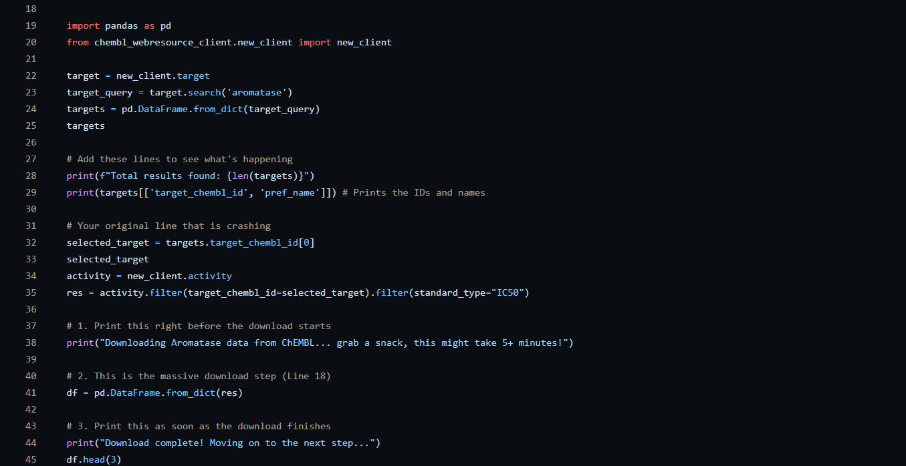

Drug Discovery Using Machine Learning and Data Analysis
Overview
A Python workflow that takes bioactivity data from the ChEMBL database, cleans and explores it, and trains machine learning models to predict drug activity from molecular descriptors.
The problem
Finding a new drug means sorting through a huge number of candidate molecules, and testing each one in a lab is slow and expensive. Computational methods can narrow the field by predicting which molecules are most likely to be active, so lab time goes to the best candidates first.
I wanted to build that pipeline myself, from raw database records to a trained and evaluated model, to understand how bioinformatics and machine learning fit together in pharmaceutical research.
What I built
The project is a six-step pipeline written in Python. Data handling is done with Pandas, plots with Matplotlib, and the models with Scikit-Learn.
| Step | What I did |
|---|---|
| Data collection | Gathered drug discovery datasets from bioinformatics sources and identified the key molecular features. |
| Preprocessing | Removed missing and inconsistent values and formatted the data for analysis. |
| Analysis | Ran exploratory analysis and visualized how molecular properties relate to biological activity. |
| Model development | Trained machine learning models to predict drug activity from molecular descriptors. |
| Evaluation | Tested model performance with standard metrics and compared different approaches. |
| Reporting | Summarized the findings and interpreted them in the context of drug discovery. |

Figure 1: Snippet of the code written for the project and uploaded to GitHub.
Outcome
The result is a complete workflow that goes from raw ChEMBL bioactivity data to a trained, evaluated model, with the code published on Github.
What I learned
- Bioinformatics fundamentals: how biological and chemical datasets are collected, and the role computational tools play in modern pharmaceutical research.
- Data preparation: cleaning and preprocessing techniques, and good habits for organizing and working with large datasets.
- Exploration and visualization: exploratory data analysis (EDA), and statistical analysis and interpretation of scientific data.
- Machine learning: model training and evaluation, and how AI can predict molecular and drug-related properties.
Tools used
| Tool | Role |
|---|---|
| Python | Main language for the whole pipeline |
| ChEMBL | Source of the bioactivity data |
| Pandas | Loading, cleaning and formatting the data |
| Matplotlib | Visualizing molecular properties against activity |
| Scikit-Learn | Training and evaluating the machine learning models |